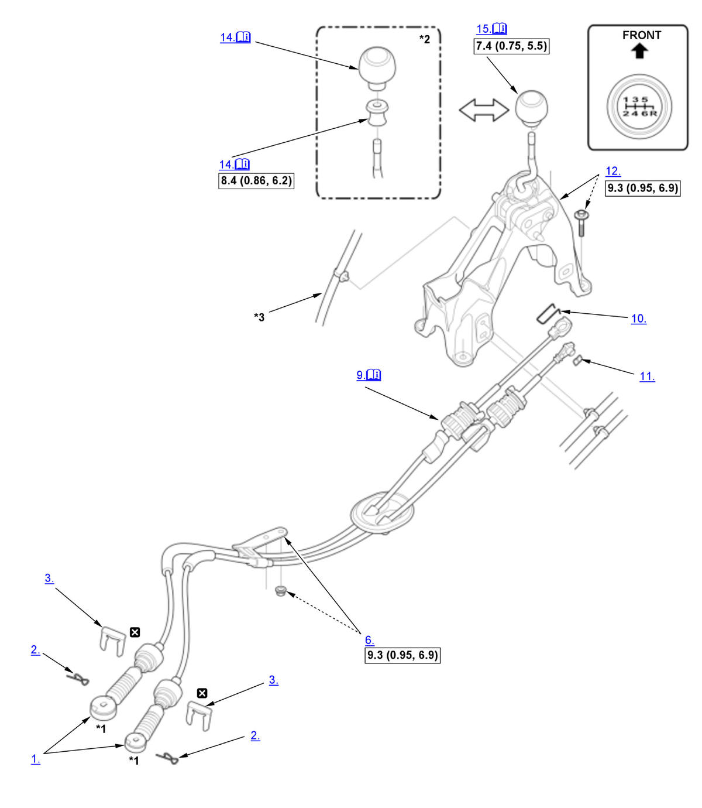

Gearshift Mechanism Removal and Installation (Except K20C1 (M/T)): Installation: Procedure
WARNING: This page is about a different variant/trim than selected.
NOTE:
Numbered call-outs in figure pertain to list numbers in following procedure.
Fig 1: Exploded View Of Gearshift Mechanism Components With Torque Specifications For Installation (Except K20C1 - M/T)

Courtesy of HONDA, U.S.A., INC. |
Detailed information, notes, and precautions |
 |
Torque: N.m (kgf.m, lbf.ft) |
 |
Replace |
| *1 | Do not wipe off the special grease applied to the area of the change wire ends |
| *2 | Si |
| *3 | For some models |
- Change Wire - Install (Transmission Side)
- Lock Pin - Install
- Change Wire Clip - Install
- Intake Air Duct - Install
- Air Cleaner - Install
- Change Wire Bracket - Install
- Exhaust Pipe A - Install
- Engine Undercover - Install
- Change Wire - Install (Shift Lever Side)
NOTE:
- Install the socket holder (A), then rotate the socket holder retainer (B) clockwise until it stops.
- Do not install the change wire by holding the change wire guide (C).
- Clamp - Install
- Clip Spring - Install
- Shift Lever Housing - Install
- Center Console - Install
- Shift Lever Boot Ring and Shift Lever Knob - Install (Si)
1. Install and turn the shift lever boot ring (A) until it reaches the bottom of the threads on the shift lever. 2. Install and turn the shift lever knob (B) until it contacts the shift lever boot ring.
NOTE: Make sure the shift lever knob is installed in the correct direction.
3. Tighten the shift lever boot ring counterclockwise with the shift pattern on the shift lever knob properly aligned.
4. Install the shift lever boot (C) by hooking the hooks (D) with the shift lever boot ring.
- Shift Lever Knob - Install (Except Si)
1. Install the shift lever knob (A). NOTE: Tighten the shift lever knob until the shift pattern is properly aligned.
2. Install the shift lever boot (B).